Linked Infrastructure for Networked Cultural Scholarship (LINCS)
The LINCS Project is a 3 year infrastructure project hosted by the Digital Humanities Department at the University of Guelph.
LINCS is an interdisciplinary project working with multiple Canadian Universities that aims to build web tools for humanities
research. Using an rdf-style database format called linked open data and adhereing to the philosophy of Tim Berner's Semantic Web, LINCS
hopes to assist researchers in online publishing, collaboration and curation of large datasets. This was my first Co-op position;
I worked for LINCS as a Software Developer for 8 months during two Co-op semesters, and am currently continuing employment with them
part time.

LINCS is a large and ambitious project, with many moving parts involved. Currently, LINCS maintains about 60 GitLab repositories,
having to do with many different aspects of many different projects. Some contain configuration files, some are for documentation,
and many contain the source code running the numerous tools under development. LINCS also maintains connections with Semantic
Web Scholars from around the world. I myself have been in contact with developers in both Germany and the UK during my time at
LINCS, and had the opportunity to contribute to international projects. It has been a truly fantastic experience, providing me
with practical knowledge of many different tech stacks, most of which were far outside the realms of the original job posting
that I applied to. I learned PHP, Vue,js, React, Kubernetes, Docker, Agile Developement, GitLab practises, and many other libraries
and modules all while working at LINCS. Below, you can find examples of the work I've done...
The main goal of having a co-op placement is to gain experience in your field as a student, so you're not as green when you graduate
and enter the real job market. Being in a co-op program means there are requirements in place asking you to set more specific goals to meet during
a placement. My goals at LINCS were to practise code documentation, learn dev-ops practises, learn developer collaboration methods, present tech
demos, exercise my technical vocabulary, and to gain confidence in my abilities. I beleive that I have excelled in all of my goals, and the outstanding
feedback I've recieved from my employer cooberates this beleif. For documentation, I've adhered to the guidelines presented to me in other LINCS work
that I've seen. For dev-ops and developer collaboration, I've learned Kube-ctl and Rancher, along with GitLab Agile development practises. I had the
opportunities to present demos of work I've accomplished both to UX teams and the executive team of the project, requiring me to use technical
vocabulary to describe my work. Overall, I am very greatful to the entire team at LINCS for providing me the trust and opportunity to thrive.
Both my confidence and my ability to adapt to whatever is thrown my way has increased durastically over the last 8 months.